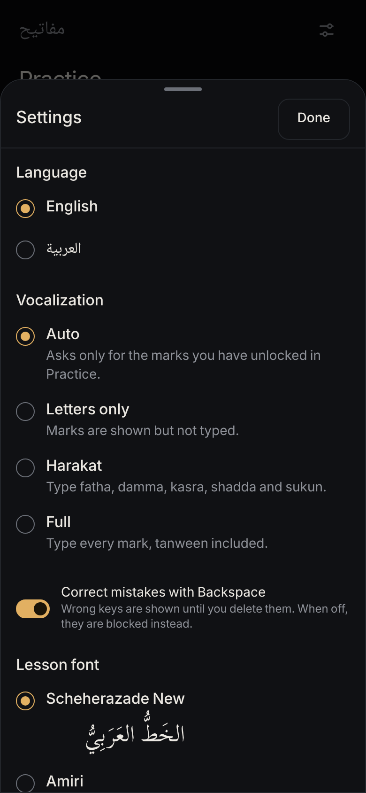
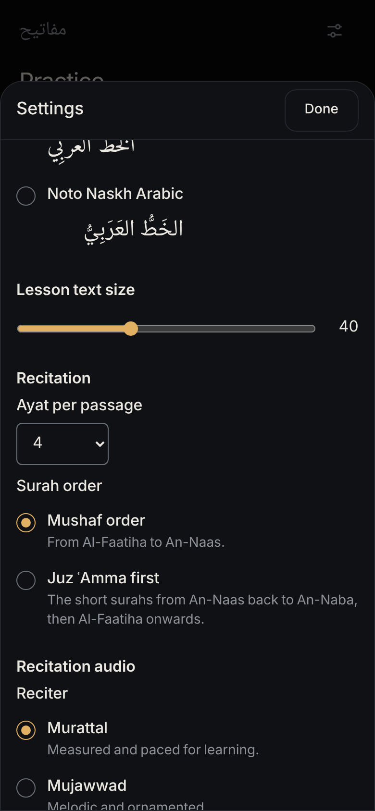
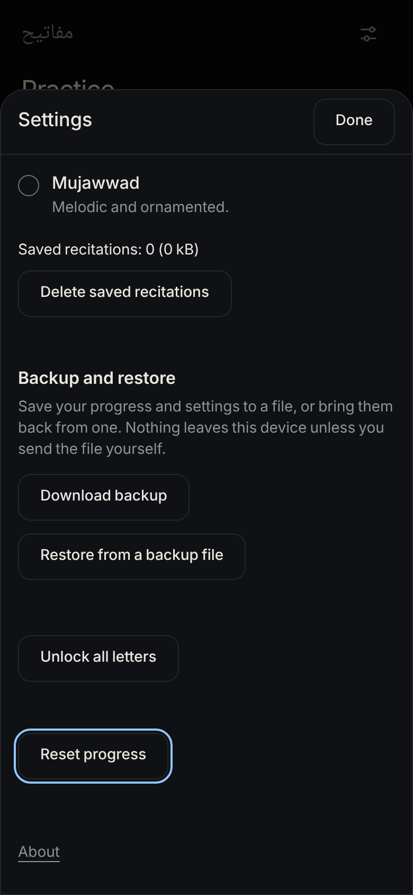

Today, measured
The real dialog, measured in Chromium on the current build. These are the numbers every candidate is compared with.



- Phone 390 × 844
- 2.8 screens tall. Reset progress is 1,970 px down. 13 Tab presses to reach it.
- Desktop 1440 × 900
- 2.9 screens tall (the box is only 808 px high). Reset progress is 2,182 px down. 17 Tab presses.
- 320 × 568, text at 200%
- 12.1 screens tall. 6,178 px of scrolling to see everything.
- Controls on screen
- 27 focusable controls in one column. 12 settings and 6 actions in 12 blocks, in the order the features were added.